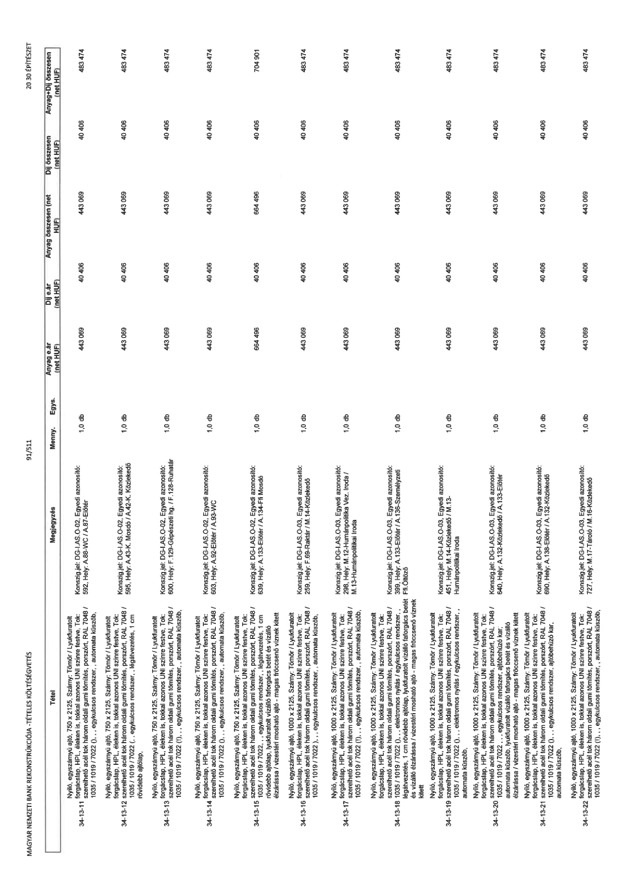

| Tétel | Megjegyzés | Menny. | Egys. | Anyag e.ár (net HUF) | Díj e.ár (net HUF) | Anyag összesen (net HUF) | Díj összesen (net HUF) | Anyag+Díj összesen (net HUF) |
|---|---|---|---|---|---|---|---|---|
| 34-13-11 | Nyíló, egyszárnyú ajtó, 750 x 2125, Szárny: Tömör / Lyukfúratott forgácslap, HPL éleken is, tokkal azonos UNI színre festve, Tok: szerelhető acél tok három oldali gumi tömítés, porszórt, RAL 7048 / 1035 / 1019 / 7022 (...) , egykulcsos rendszer,, automata küszöb,; Konszig.jel: DG-LAS-O-02, Egyedi azonosító: 592, Hely: A.88-WC / A.87-Előtér | 1,0 | db | 443 069 | 40 405 | 443 069 | 40 405 | 483 474 |
| 34-13-12 | Nyíló, egyszárnyú ajtó, 750 x 2125, Szárny: Tömör / Lyukfúratott forgácslap, HPL éleken is, tokkal azonos UNI színre festve, Tok: szerelhető acél tok három oldali gumi tömítés, porszórt, RAL 7048 / 1035 / 1019 / 7022 (...) , egykulcsos rendszer,, légátvezetés, 1 cm rövidebb ajtólap,; Konszig.jel: DG-LAS-O-02, Egyedi azonosító: 595, Hely: A.43-K. Mosdó / A.42-K. Közlekedő | 1,0 | db | 443 069 | 40 405 | 443 069 | 40 405 | 483 474 |
| 34-13-13 | Nyíló, egyszárnyú ajtó, 750 x 2125, Szárny: Tömör / Lyukfúratott forgácslap, HPL éleken is, tokkal azonos UNI színre festve, Tok: szerelhető acél tok három oldali gumi tömítés, porszórt, RAL 7048 / 1035 / 1019 / 7022 (...) , egykulcsos rendszer,, automata küszöb, rövidebb ajtólap,; Konszig.jel: DG-AS-O-02, Egyedi azonosító: 600, Hely: F.129-Gépészeti hg / F.128-Ruhatár | 1,0 | db | 443 069 | 40 405 | 443 069 | 40 405 | 483 474 |
| 34-13-14 | Nyíló, egyszárnyú ajtó, 750 x 2125, Szárny: Tömör / Lyukfúratott forgácslap, HPL éleken is, tokkal azonos UNI színre festve, Tok: szerelhető acél tok három oldali gumi tömítés, porszórt, RAL 7048 / 1035 / 1019 / 7022 (...) , egykulcsos rendszer,, automata küszöb,; Konszig.jel: DG-LAS-O-02, Egyedi azonosító: 603, Hely: A.92-Előtér / A.93-WC | 1,0 | db | 443 069 | 40 405 | 443 069 | 40 405 | 483 474 |
| 34-13-15 | Nyíló, egyszárnyú ajtó, 750 x 2125, Szárny: Tömör / Lyukfúratott forgácslap, HPL éleken is, tokkal azonos UNI színre festve, Tok: szerelhető acél tok három oldali gumi tömítés, porszórt, RAL 7048 / 1035 / 1019 / 7022 (...) , egykulcsos rendszer,, légátvezetés, 1 cm rövidebb ajtólap, lyukfúratott vízálló faforgács betét és vízálló élzárása / vizesen mosható ajtó - magas fröccsenő víznek kitett; Konszig.jel: DG-AS-O-02, Egyedi azonosító: 539, Hely: A.133-Előtér / A.134-Ffi Mosdó | 1,0 | db | 664 496 | 40 405 | 664 496 | 40 405 | 704 901 |
| 34-13-16 | Nyíló, egyszárnyú ajtó, 1000 x 2125, Szárny: Tömör / Lyukfúratott forgácslap, HPL éleken is, tokkal azonos UNI színre festve, Tok: szerelhető acél tok három oldali gumi tömítés, porszórt, RAL 7048 / 1035 / 1019 / 7022 (...) , egykulcsos rendszer,, automata küszöb,; Konszig.jel: DG-LAS-O-03, Egyedi azonosító: 259, Hely: F.69-Raktár / M.14-Közlekedő | 1,0 | db | 443 069 | 40 405 | 443 069 | 40 405 | 483 474 |
| 34-13-17 | Nyíló, egyszárnyú ajtó, 1000 x 2125, Szárny: Tömör / Lyukfúratott forgácslap, HPL éleken is, tokkal azonos UNI színre festve, Tok: szerelhető acél tok három oldali gumi tömítés, porszórt, RAL 7048 / 1035 / 1019 / 7022 (...) , egykulcsos rendszer,, automata küszöb,; Konszig.jel: DG-LAS-O-03, Egyedi azonosító: 298, Hely: M.12-Humánpolitikai vez. iroda / M.13-Humánpolitikai iroda | 1,0 | db | 443 069 | 40 405 | 443 069 | 40 405 | 483 474 |
| 34-13-18 | Nyíló, egyszárnyú ajtó, 1000 x 2125, Szárny: Tömör / Lyukfúratott forgácslap, HPL éleken is, tokkal azonos UNI színre festve, Tok: szerelhető acél tok három oldali gumi tömítés, porszórt, RAL 7048 / 1035 / 1019 / 7022 (...) , elektromos nyitás / egykulcsos rendszer, légátvezetés, 1 cm rövidebb ajtólap, lyukfúratott vízálló faforgács betét és vízálló élzárása / vizesen mosható ajtó - magas fröccsenő víznek kitett; Konszig.jel: DG-AS-O-03, Egyedi azonosító: 399, Hely: A.133-Előtér / A.135-Személyzeti Ffi Öltöző | 1,0 | db | 443 069 | 40 405 | 443 069 | 40 405 | 483 474 |
| 34-13-19 | Nyíló, egyszárnyú ajtó, 1000 x 2125, Szárny: Tömör / Lyukfúratott forgácslap, HPL éleken is, tokkal azonos UNI színre festve, Tok: szerelhető acél tok három oldali gumi tömítés, porszórt, RAL 7048 / 1035 / 1019 / 7022 (...) , elektromos nyitás / egykulcsos rendszer,, automata küszöb,; Konszig.jel: DG-LAS-O-03, Egyedi azonosító: 451, Hely: M.14-Közlekedő / M.13-Humánpolitikai iroda | 1,0 | db | 443 069 | 40 405 | 443 069 | 40 405 | 483 474 |
| 34-13-20 | Nyíló, egyszárnyú ajtó, 1000 x 2125, Szárny: Tömör / Lyukfúratott forgácslap, HPL éleken is, tokkal azonos UNI színre festve, Tok: szerelhető acél tok három oldali gumi tömítés, porszórt, RAL 7048 / 1035 / 1019 / 7022 (...) , egykulcsos rendszer,, ajtóbehúzó kar, automata küszöb, lyukfúratott vízálló faforgács betét és vízálló élzárása / vizesen mosható ajtó - magas fröccsenő víznek kitett; Konszig.jel: DG-LAS-O-03, Egyedi azonosító: 640, Hely: A.132-Közlekedő / A.133-Előtér | 1,0 | db | 443 069 | 40 405 | 443 069 | 40 405 | 483 474 |
| 34-13-21 | Nyíló, egyszárnyú ajtó, 1000 x 2125, Szárny: Tömör / Lyukfúratott forgácslap, HPL éleken is, tokkal azonos UNI színre festve, Tok: szerelhető acél tok három oldali gumi tömítés, porszórt, RAL 7048 / 1035 / 1019 / 7022 (...) , egykulcsos rendszer,, ajtóbehúzó kar, automata küszöb,; Konszig.jel: DG-AS-O-03, Egyedi azonosító: 690, Hely: A.138-Előtér / A.132-Közlekedő | 1,0 | db | 443 069 | 40 405 | 443 069 | 40 405 | 483 474 |
| 34-13-22 | Nyíló, egyszárnyú ajtó, 1000 x 2125, Szárny: Tömör / Lyukfúratott forgácslap, HPL éleken is, tokkal azonos UNI színre festve, Tok: szerelhető acél tok három oldali gumi tömítés, porszórt, RAL 7048 / 1035 / 1019 / 7022 (...) , egykulcsos rendszer,, ajtóbehúzó kar, automata küszöb,; Konszig.jel: DG-AS-O-03, Egyedi azonosító: 727, Hely: M.17-Tároló / M.16-Közlekedő | 1,0 | db | 443 069 | 40 405 | 443 069 | 40 405 | 483 474 |
